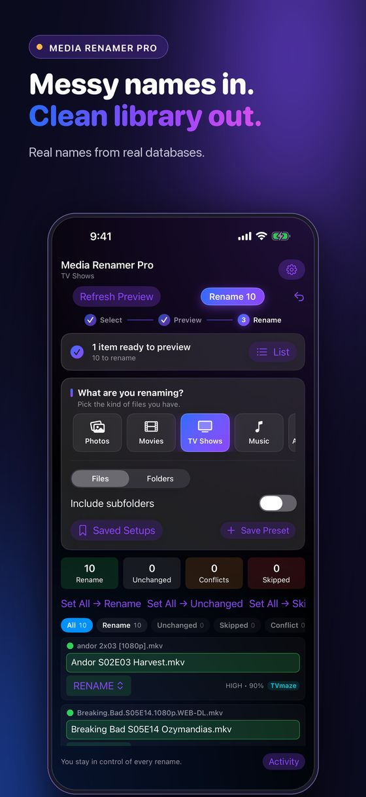
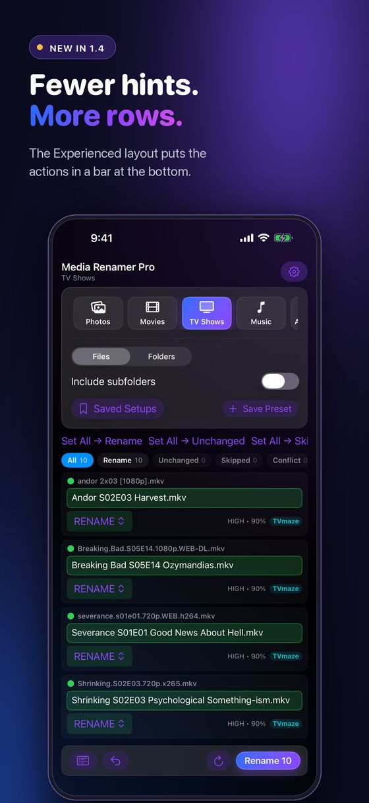
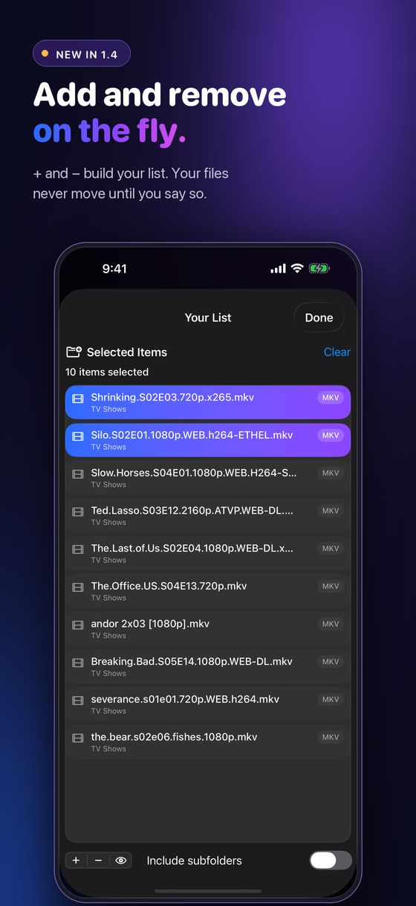
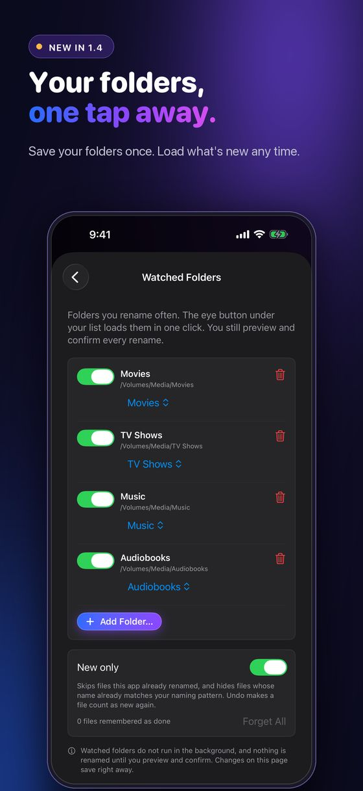
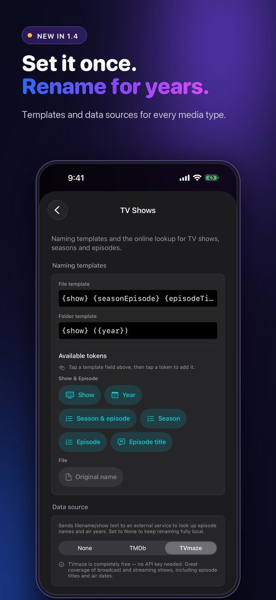

New in 2.1.3: undo any past batch
Turn messy media folders into clean, organized libraries.
Raw camera exports, disc rips, and downloads leave your drives full of cryptic filenames that break media servers and photo albums. Media Renamer Pro reads the metadata already embedded inside your files, looks up missing titles from trusted databases, and shows you the complete side-by-side rename plan before touching disk.
The.Last.of.Us.S02E04.1080p.mkv
→
The Last of Us S02E04 Day One.mkv
IMG_4921.HEIC
→
2024-08-12 Tokyo Vacation.heic
track_01_final.mp3
→
Project Hail Mary - Part 01.mp3
US $4.99 once. Mac, iPad and iPhone. No subscription, no ads, no account.

New in 2.1.3
Undo any past batch, plus smarter photos and TV
Everything from 2.1, 2.1.1 and 2.1.3. Preview first and Undo still apply to everything below.
Undo any past batch
Undo is no longer just for the last batch. Click the arrow next to Undo (touch and hold on iPhone and iPad), choose Undo a Past Batch, and put any earlier batch back. Files that moved since are skipped, never overwritten.
Interrupted renames fix themselves
If the app quits, the Mac sleeps or a drive disconnects mid-batch, your files are put back on their own the next time it opens. Nothing is left with a strange temporary name.
Apple Intelligence photo names
Photos are described on Apple's Private Cloud Compute. Free, no account, no API key. Save the description into the file so Spotlight can find it.
Smarter TV episode matching
Episode numbers from the Season folder, split episodes in the right order, two episodes in one file, and show names in their official styling.
Better music and audiobook lookups
Apple Music first for album, year and cover. One lookup per audiobook, so every chapter gets the same title and cover.
Tighter privacy
API keys live only in your Keychain. Local-Only Mode blocks every internet connection, and Delete All Face Data clears face recognition in one tap.

Mac
Every batch, one list
Pick any batch and put it back. Previews and older logs are one switch away.
iPhone and iPad
Touch and hold Undo
The same list on iPhone and iPad. If the folder is somewhere new, it asks for it once.
Full history on the release notes page. Every feature in one place on the features page. Want the walkthrough for watched folders? Read how to rename only the new files in a folder.
Tag tools from 2.0: edit tags and cover art, fix a wrong match, clean and fill tags and five workflows for 2.0. Changing tags changes the file itself, and Undo puts it back exactly.
Six kinds of media
One renamer for everything on your drives
Most renamers stop at TV and movies. This one covers the rest of what is actually on your drives, each with its own naming template and data source. See the full feature list.
TV shows
Real episode titles from TVmaze, TMDb and OMDb, in the SxxExx format Plex, Jellyfin and Emby expect.
Movies
The correct title and year, with the scene tags stripped out. Folders mode renames whole movie folders and never touches your library folders.
Photos and video
Date taken, camera, city, and a scene description from Apple Intelligence, free on Apple's Private Cloud Compute. Turn cryptic numbers into human names that are instantly searchable in Spotlight and Finder.
Music
Artist, title, album and track from the tags already inside the file, with Apple Music filling in album, year and cover art.
Audiobooks
Author and title from Google Books and OpenLibrary, with a chapters mode for multipart books.
Retro game ROMs
Clean titles and region tags from IGDB and RAWG, with a platform-aware era check. Read the ROM naming guide.
How it works
Nothing moves until you say so
Ten messy TV filenames go in. The app looks up the real episode titles, shows every proposed name side by side, and renames all ten in one click. Undo puts it all back.
Recorded in Media Renamer Pro using copied filename fixtures. No media contents were changed.
Your first rename
Three steps, every time
Start with a copied folder of a few files. You will know within a minute whether it names things the way you like.
- Add files or a folder. Pick the media type, then add files with + or drop them in. On Mac, if Grant Access appears, select the folder itself and click Grant Access.
- Preview. Check the old and new names, the source of each match and its confidence. Any new name can be edited.
- Rename. Keep the app open and the drive connected until the batch finishes. Undo puts the last batch back, and Undo a Past Batch reaches any earlier one.
Why people keep it
Built so a batch rename cannot eat your files
- Preview firstEvery single change is visible before it happens.
- Undo any batchThe last one with one click, or any earlier one from the Undo a Past Batch list.
- Recovers from interruptionsA quit, a sleeping Mac or a dropped drive mid-batch? Files go back on their own next launch.
- Never overwritesTwo files that resolve to the same name get a suffix, not a collision.
- Only what is newWatched Folders with New only skip the files you already renamed.
- Presets per media typeClick-to-add naming tokens. No regex, no scripting.
- Start from FinderSelect files, right click, Rename with Media Renamer Pro.
- Subtitles follow the videoLanguage and forced tags intact, so Plex and Jellyfin keep pairing them.
- Network shares and NASPreview changes on a mounted SMB share before applying them.
One purchase, every device
Mac, iPad and iPhone
A universal app. Buy it once and it runs on all three. On iPhone and iPad, pick any folder in Files or iCloud Drive, including folders on a network share, and rename right there.





Private by design
Your files stay on your device
Renaming happens on your device. Photo descriptions come from Apple Intelligence, on your device or on Apple's Private Cloud Compute, which Apple built so your photos are never stored or shared. Prefer nothing leaves at all? Pick Apple Vision, or turn on Local-Only Mode and the app makes no internet connections of any kind. Optional cloud engines (Anthropic, Google, OpenAI and xAI) only send photos when you add your own key and choose that engine, and those keys live only in your Keychain. Delete All Face Data clears face recognition in one tap. No account, tracking, ads or telemetry in the app. This website has optional analytics that stays off unless you allow it. See Website privacy.
Guides
Naming, done properly
Things I have had to figure out, written down. Useful whatever renamer you use.
How to rename only the new files in a folder
Rename what just arrived and leave the rest alone. Inbox folders, what counts as done, NAS drives that go missing, and Watched Folders.
Read the guide →How to name TV and movie files so Plex and Jellyfin match them
Folder structure, SxxExx, absolute vs aired anime ordering, subtitles, NFO sidecars, and renaming safely over a NAS.
Read the guide →How to set up your folders and filenames so renaming just works
The layout that gets clean names on the first pass for every media type, files that start with S01E01, template tricks, and an FAQ.
Read the guide →Why batch renaming eats files, and the two-phase fix
Chains and swaps are what destroy files in a batch rename. Why one-at-a-time fails, and the probe most tools skip.
Read the guide →Why your subtitles do not show up in Plex or Jellyfin
Base name matching, language codes, forced and SDH flags, the library setting everyone misses, and what renaming does to the .srt.
Read the guide →What breaks when you rename files over SMB and NAS shares
Atomic replace, free space, Finder tags and extended attributes, case sensitivity, and mid-batch failures.
Read the guide →How to name audiobook files so Audiobookshelf, Plex and Emby sort them right
Why parts play out of order, zero-padded part numbers, Title - Author flips, the Audiobookshelf folder layout, and a template that works on a NAS.
Read the guide →Community feedback
Built for real libraries, trusted by collectors
What fellow developers, self-hosters and media curators say about Media Renamer Pro.
“The two-phase rename and SMB case handling are genuinely well thought out. Solves the exact edge cases where other tools eat files.”
“Exactly what I needed for cleaning up audiobooks, music tags, and photo archives without getting locked into a subscription.”
“The preview plan and one-tap undo give me complete peace of mind before touching disk. Worth every penny of five bucks.”
Questions
Quick answers
Is Media Renamer Pro free?
It is a one-time purchase of US $4.99 on the App Store. No subscription, no ads, no account, and one purchase covers Mac, iPad and iPhone.
Will it rename anything without asking?
No. It builds a rename plan and shows every old and new name side by side. Nothing on disk changes until you press Rename. Undo puts the last batch back, and Undo a Past Batch reaches any earlier one.
Does it work with Plex, Jellyfin and Emby?
Yes. The default TV and movie templates follow the naming those servers read, like Show S01E02 Episode Title and Movie (Year), and you can change them. The naming guide explains why.
Can it rename files on a NAS?
Yes. Mount the share in Finder (or pick it in Files on iPhone and iPad) and preview as normal. You can save it as a Watched Folder and load only the new files automatically.
Do I need API keys?
No. TVmaze, Apple Music, MusicBrainz, OpenLibrary and RAWG need nothing, and Apple Intelligence photo names are free with no key. TMDb, OMDb and IGDB can use your own free key for better results.
Can I undo a batch from last week?
Yes. Click the arrow next to Undo (touch and hold on iPhone and iPad), choose Undo a Past Batch and pick it from the list. Files that were moved, deleted or renamed again since are skipped, never overwritten. It works for any batch whose log is still in the export folder, and the app keeps the last 100.
What do Apple Intelligence photo names need?
macOS 27 or iOS 27 on a device that supports Apple Intelligence. It runs on Apple's Private Cloud Compute for free, with a daily limit. On older systems, or past the limit, the app uses Apple Vision on your device instead.
More on the support page, or chat with other users on the Discord.
Requirements
What you need
- macOS 14.0 or laterOn your Mac.
- iOS and iPadOS 17.0 or lateriPhone and iPad.
- Apple Intelligence photo namesmacOS or iOS 27 on a supported device. Everything else works without it.
- One universal purchaseUS $4.99 covers all three.

Rename it all, see it first
Media Renamer Pro for Mac, iPad and iPhone. $4.99 once. No subscription, no account.